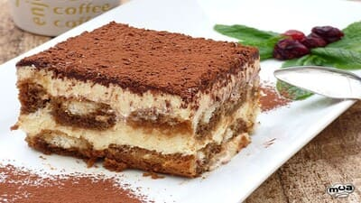
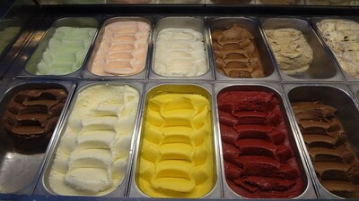
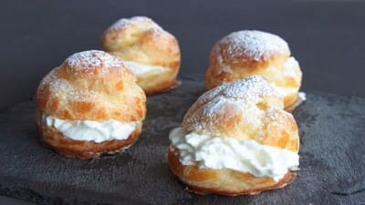

Postres Populares
La repostería italiana cuenta con una amplia variedad de postres y dulces reconocidos en todo el mundo, como el tiramisú, un postre a base de bizcocho de café, queso mascarpone y cacao en polvo, o los cannoli sicilianos, que consisten en una masa frita rellena de ricotta dulce y decorada con frutas confitadas. Otros postres populares son la panna cotta, el zuccotto y el panettone.

Tiramisú.
Creado en la región del Véneto en los años 50 es uno de los postres más internacionales. Existen mil maneras de preparar un tiramisú, un postre versátil que acepta miles de versiones. Incluso también se puede añadir nata en su elaboración para darle un toque mucho más cremoso y sabroso.

Panna Cotta.
Es algo así como la versión italiana del flan español. La base de este postre es la nata, de hecho la palabra panna cotta significa literalmente “nata cocida”. La receta procede de la zona del Piamonte y su rico sabor, su textura y su facilidad en el preparado la han hecho mundialmente conocida.

Cannoli.
Otro de los postres italianos que debes tener en cuenta es el cannoli. Se trata de una masa crujiente enrollada rellena de ricotta pastelera y también trozos de fruta en los extremos. Para su elaboración también puedes utilizar nuestra nata Ken.

Gelato.
Los italianos aseguran que su “gelato” (helado) es el mejor del mundo. Al menos sí que es de los más laureados y reconocidos. Se elaboran con los mismos ingredientes que la mayoría de postres lácteos como leche, nata, varios azúcares y aromas y pueden incluir frutas y frutos secos, entre otros ingredientes.

Sfogliatelle.
Es una de las muestras más características de la alta pastelería napolitana. Un postre italiano elaborado en base a un hojaldre trabajado a mano y rellenado con ricotta, fruta confitada, crema pastelera y sémola.

Zuccotto.
Otro irresistible postre italiano es el zuccotto elaborado usando bizcocho o soletillas mojadas en ron u otro licor de alta graduación. Además se añade una capa gruesa de nata montada, aromatizada a veces con vainilla o chocolate, fruta confitada, frutos secos o nueces, y se cubre con otra capa de bizcocho según la receta tradicional.

Panforte.
Es uno de los postres tradicionales más queridos por los italianos y se elabora con fruta y frutos secos. Una especie de pastel de fruta fácil de elaborar donde se elaboran frutos secos diversos, fruta y especias con harina y coco.

Panettone.
Aunque es más consumido en Navidad, el panettone es uno de los postres italianos más conocidos en el mundo. Una especie de brioche de grandes dimensiones con pasas y frutas confitadas. También los hay rellenos o con trozos de chocolate.

Profiteroles.
Aunque franceses e italianos se “disputan” el origen de los profiteroles, qué duda cabe que es otro de los postres italianos más demandados por los comensales. Por un lado se debe crear la masa y por otro la crema, aquí también podemos usar leche y nata.